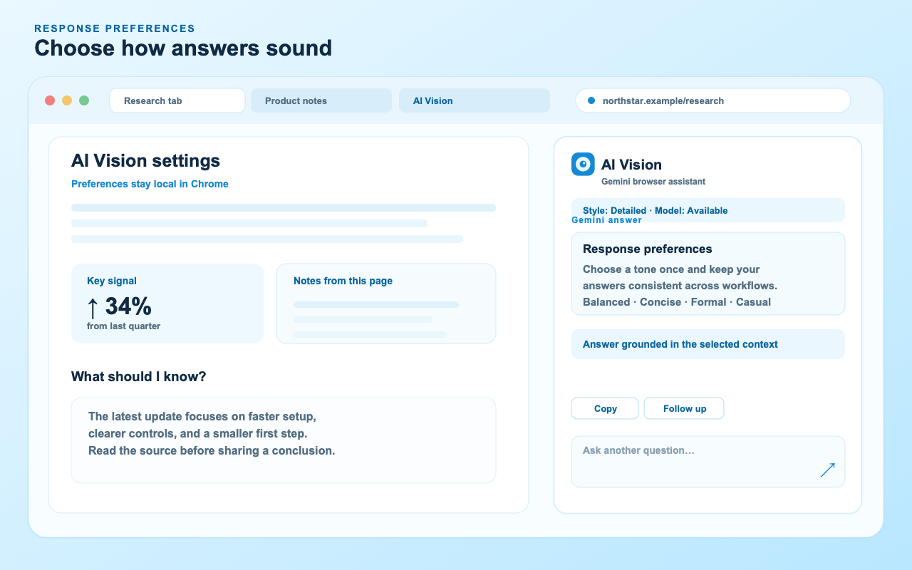
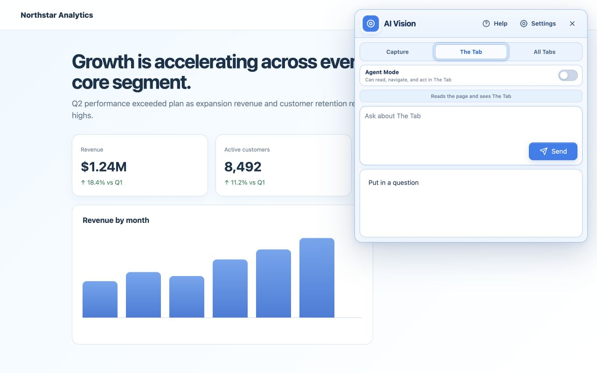
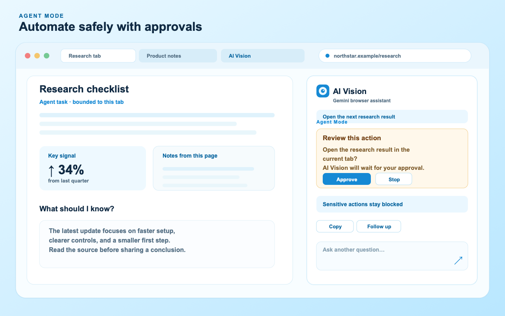

Choose your context
Capture a specific region, use the current page, or open All Tabs when you need a comparison across your research window.
Capture a chart, image, paragraph, or error with one simple action. Open More modes and tools only when you want to ask about The Tab, compare All Tabs, or run a constrained Agent Mode task.

AI Vision keeps the common path short. You supply the context, Gemini does the explaining, and you decide whether an optional browser task should continue.
Capture a specific region, use the current page, or open All Tabs when you need a comparison across your research window.
Use Summarize, Explain, Answer, or your own prompt. Follow up in the same open panel without rebuilding the context.
Copy the answer, try the request again, or enable Agent Mode for a bounded browser workflow with approval checkpoints.
Follow the practical guides for setup, screenshot prompts, webpage summaries, tab comparisons, and the privacy boundaries that matter.
Turn a long article or product page into a useful brief with a repeatable Gemini workflow.
Learn how to compare sources, prices, or research notes across up to 20 supported tabs.
Use focused captures and prompt patterns from the screenshot assistant guide.
Choose the scope above the question box. AI Vision remembers your selection until you manually change it.
Drag over a chart, paragraph, product, image, or error and ask Gemini about exactly what matters.
Ask for a summary, explanation, answer, or next step using readable content from the page in front of you.
Compare and synthesize supported pages across up to 20 tabs in the Chrome window where AI Vision started.

Set a response style once and keep using it across questions.

The Google ADK browser runtime is bundled into the extension and plans each step with a persistent five-model Gemini rotation. Chrome still validates every action. Clicks, typing, navigation, new tabs, history moves, and reloads pause for approval.
Capture works with the smallest amount of setup. The other modes stay optional, so the interface remains clear until you need more context.
Add AI Vision to Chrome, or load the project as an unpacked extension for local testing.
Create a key in Google AI Studio, open Settings, and save it. The key stays in Chrome's local extension storage.
Press Alt + Shift + V, use the toolbar or right-click menu, then choose Summarize, Explain, or Answer.
AI Vision stores the extension key in its service worker. Normal and Agent Mode requests go directly to Gemini through the bundled ADK runtime; the page never receives the saved key.
Read the full privacy notice →These answers describe the current extension behavior and its boundaries.
Yes. Create a key in Google AI Studio, then paste it into AI Vision Settings. Model access, pricing, and free-tier availability are controlled by Google.
No. Chrome internal pages, the Chrome Web Store, and other restricted pages cannot be read. All Tabs mode analyzes supported HTTP and HTTPS pages in the current window after you grant its optional permission.
No. Capture and The Tab are limited to the source tab. All Tabs is limited to supported webpages in the Chrome window where the task began. Agent Mode cannot control other apps.
The source is publicly visible on GitHub. The repository does not currently include an open-source license, so the project should be described as source-available until a license is added.
Install AI Vision, add your Gemini API key, and choose Capture, The Tab, or All Tabs.
Add AI Vision to Chrome